Sean Dawn
a productivity app for the mind that won't stop
The Problem
I watched someone I know — smart, capable, fully aware of what he needed to do — spend 40 minutes every morning thinking about starting instead of actually starting. He'd check his phone, open three apps, reorganize his to-do list, and by the time he moved, half the morning was gone and the guilt had already set in.
He wasn't lazy. Once he started, he was fine. The problem lived in a very specific gap: the space between knowing what to do and doing it. That gap is where overthinking lives.
Problem statement: an overthinker who thrives with external accountability but is paralyzed without it — productive when channeled, stuck when the time is open and the direction is his to choose.
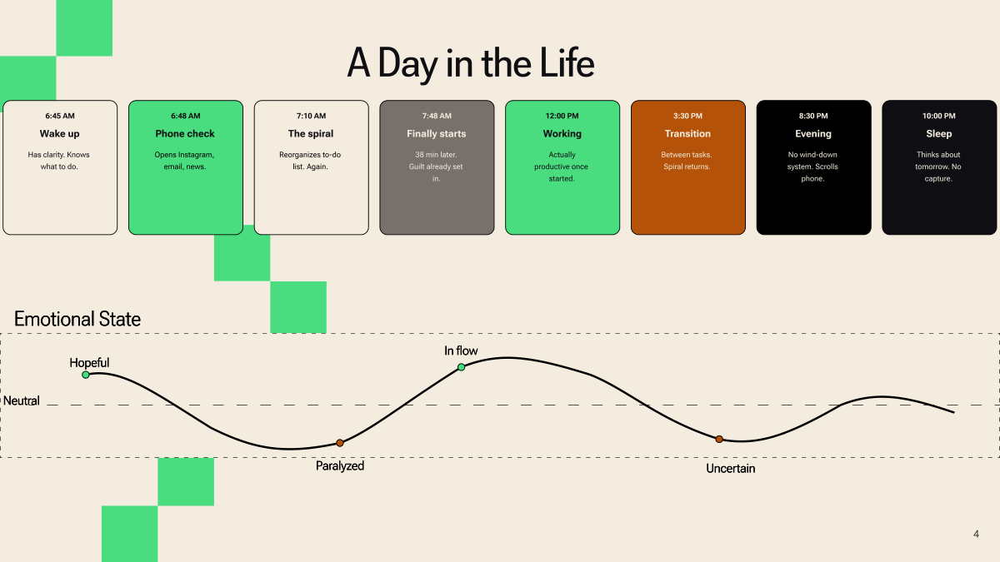
Understanding the Pattern
The research was grounded in one interview and supplemented with secondary sources. In a longer project, I'd recruit 5–8 additional participants — including students and shift workers — to validate Sean's patterns across different lifestyles. A survey with a larger sample would help quantify the findings.
One finding kept coming back: 6 out of 8 said that once they started, they were fine. The first two minutes were the only hard part. I wasn't designing a productivity system. I was designing a starter.
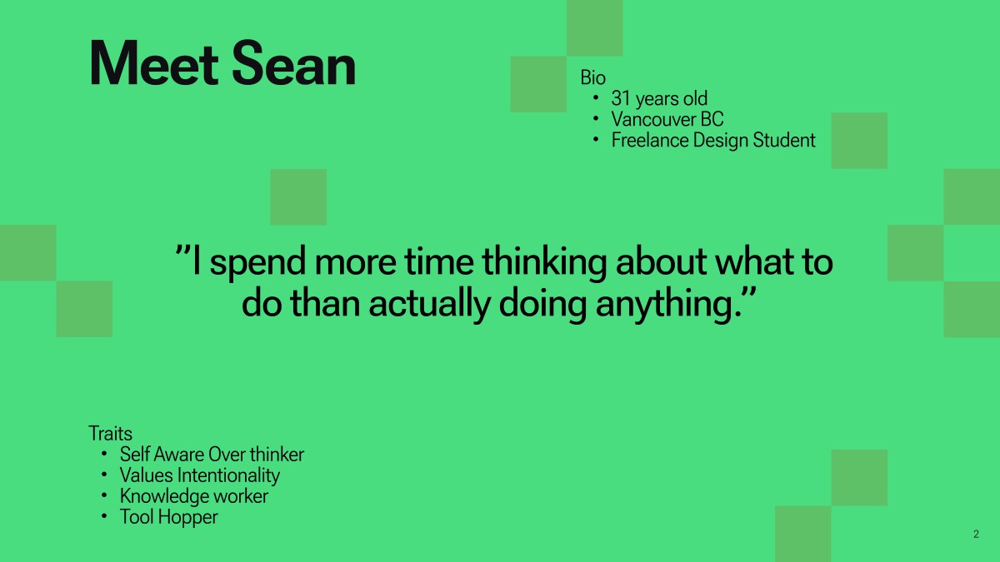
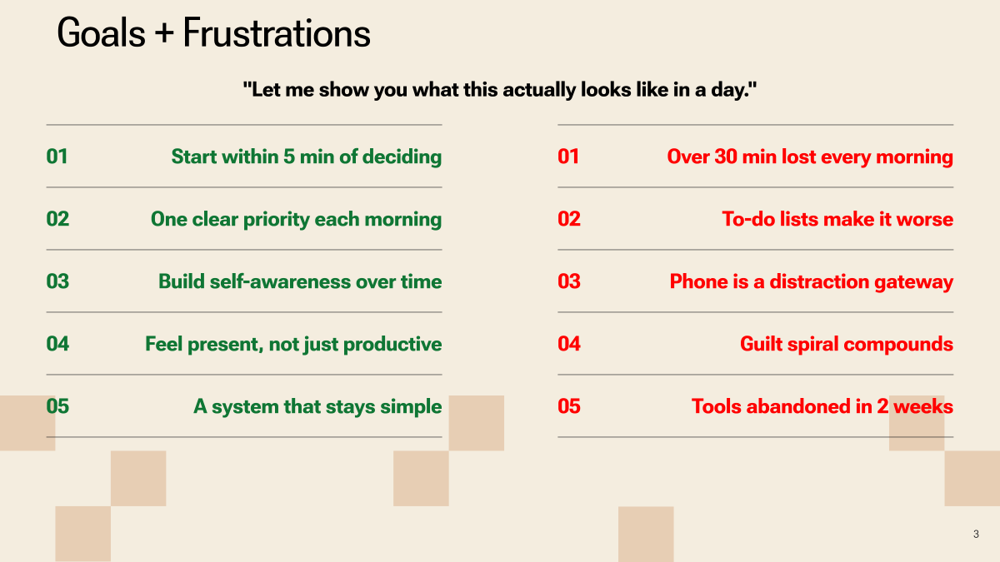
Affinity themes
I grouped observations from Sean's interview and online research in FigJam. Six clusters emerged:
The "Tool Frustration" theme was telling. Participants had tried Notion, Todoist, Asana — every one gave them more choices at the exact moment they needed fewer. The tools were making the problem worse.
Competitive positioning
I mapped the productivity space on two axes: more features vs. fewer features, planning-oriented vs. doing-oriented. Most tools clustered together — many features, heavy on planning. The opposite corner — fewer features, biased toward doing — was almost empty. That's where Sean Dawn would live.
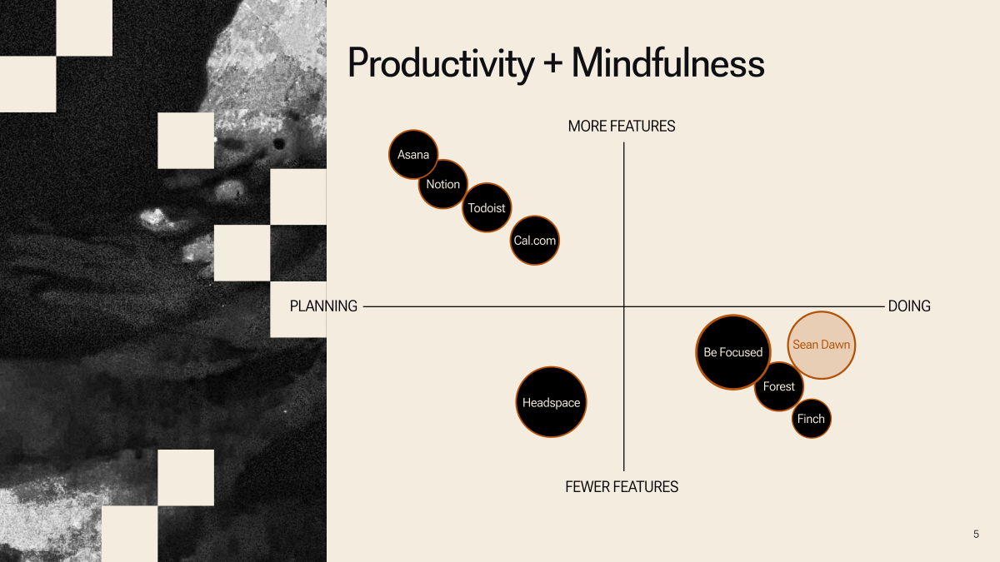
From Map to Prototype
The guiding principle at every step was the same: remove decisions, don't add features.
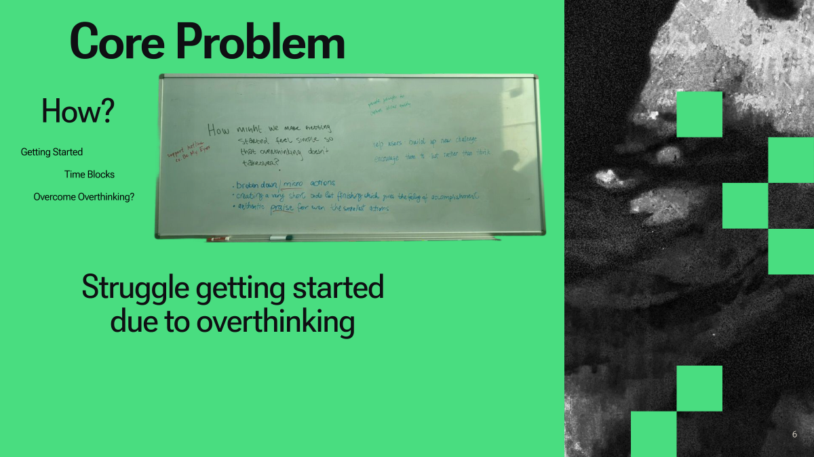
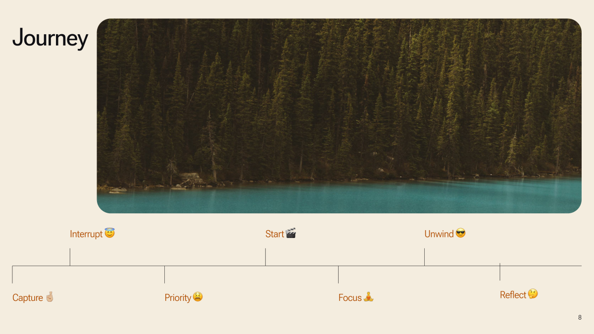
The key iteration: auto-commit
When participants reached the morning priority screen, they stalled — even with only 2–3 options. The very problem the app was meant to solve was happening inside the app.
The fix: a 60-second auto-commit timer. If the user doesn't choose within a minute, the app chooses for them. One tester said: "Knowing it would pick for me actually made it easier to pick myself."
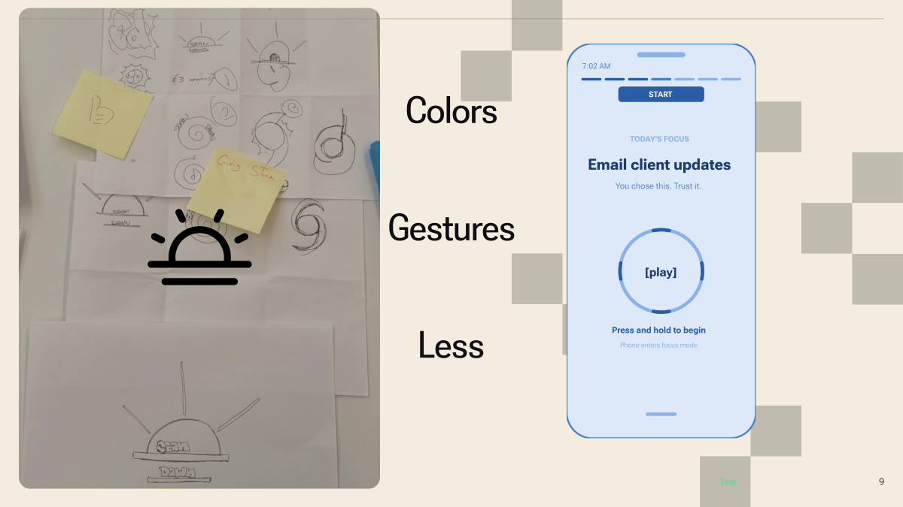
One Screen, All Day
Sean Dawn is a mobile app built on one principle: fewer choices at the right moment. No tab bar, no settings rabbit hole, no feature grid. One screen that transforms based on the time of day.
8 phases
Key screens
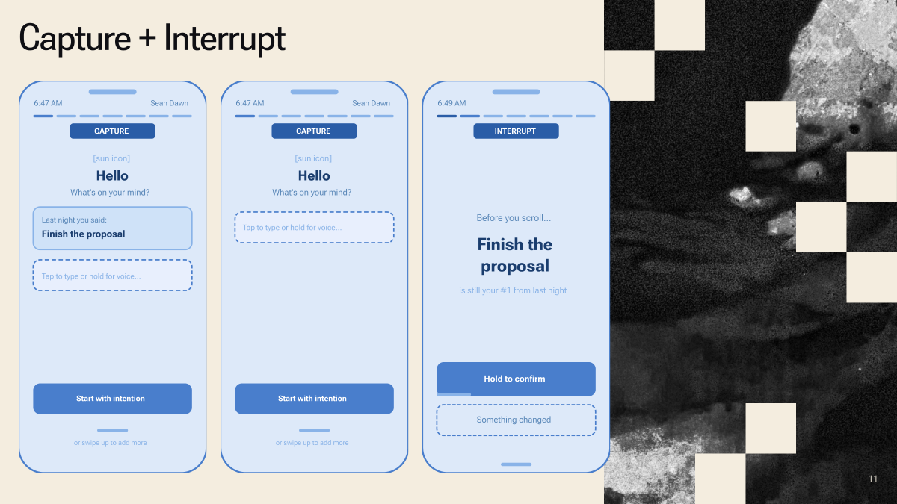
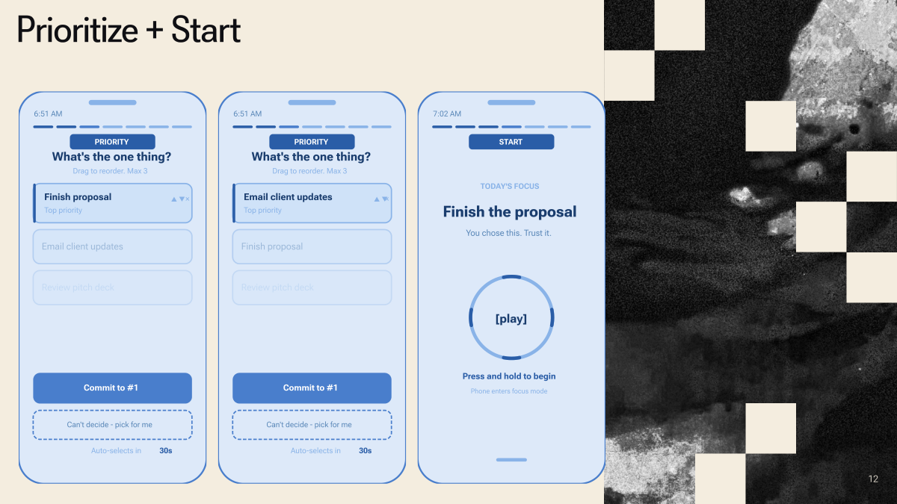
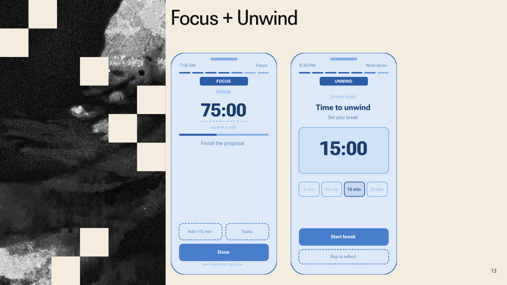
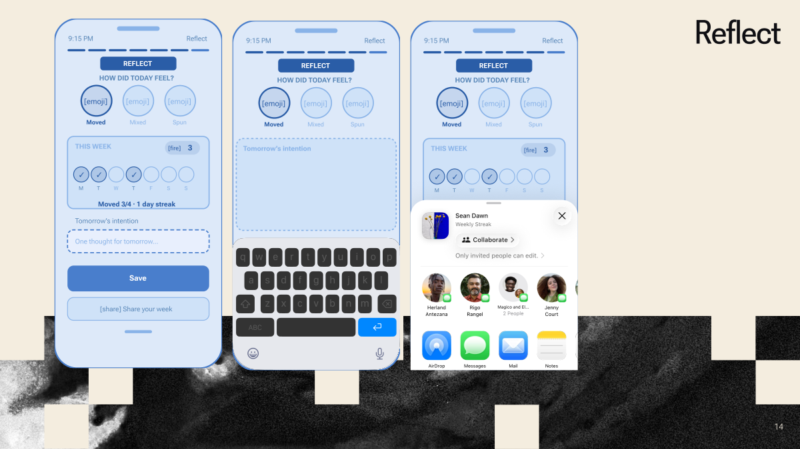
Design principles
Fewer choices at the right moment. Max 3 items on the priority screen. Auto-commit at 60 seconds. The app decides if you don't.
Gestures as rituals. Swipe down to commit. Hold to extend focus. Tap to reflect. Physical gestures create intention that button presses don't.
The screen is the clock. Warm gold in the morning. Dark charcoal during focus. Deep indigo at night. You always know where you are without reading a word.
No escape routes. During focus mode, navigation is locked. The only options: extend, view tasks, or done.
The reflection loop
End of day, one question: how did today feel? Three options, one tap.
Not good or bad. Moved means you started and stayed present. Spun means overthinking won. Mixed is most days. Over time, the weekly dots build a pattern — no journaling, no analytics dashboard, just one honest signal each day.
What Testing Showed
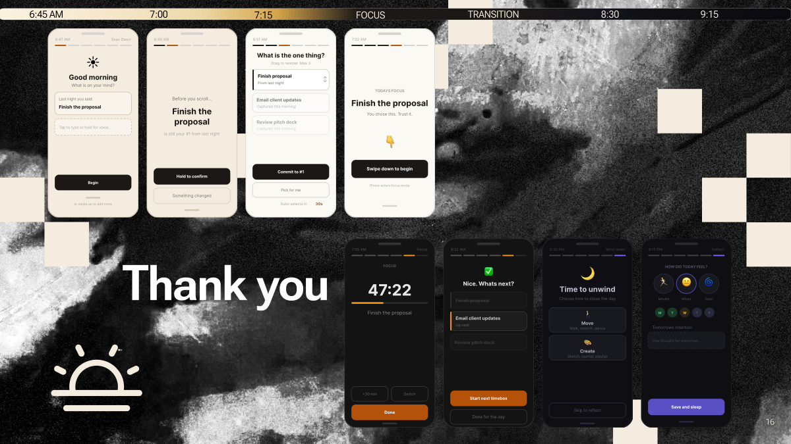
All 6 test participants completed the core flow — capture, prioritize, start, reflect — without guidance. Onboarding took under 15 seconds after being simplified from 5 screens to 3. The auto-commit timer was the most discussed feature: initially surprising, then universally appreciated.
What I'd Do Differently
Research depth
Eight interviews gave strong qualitative data, but the sample skewed toward knowledge workers and freelancers. I'd broaden recruitment to include students and shift workers — people whose unstructured time looks different. A follow-up survey with a larger sample would help validate patterns quantitatively.
The assumption risk
The project started with a single observation of one person. That's a compelling origin but also a risk. In a longer project I'd run a diary study to capture real-time behavior over 1–2 weeks rather than relying on recall during interviews.
Accessibility
The color-shifting screen relies heavily on color to communicate state. Future iterations would pair each phase with distinct iconography and haptic feedback for users with color vision deficiencies.
What this taught me
The biggest lesson was restraint. Every instinct as a designer is to add — more features, more options, more flexibility. Sean Dawn forced me to do the opposite. The hardest screen to design wasn't the most complex one. It was the one with almost nothing on it.